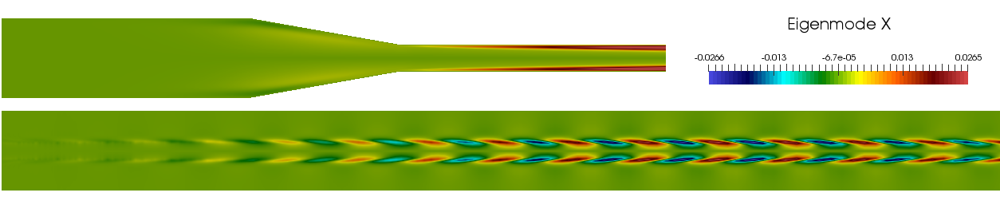

I have been working from 2012-2016 as an adjunct research scientist at Simula Research Laboratory. Here I had the great honor to be working with the late Prof. Hans Petter Langtangen [{% cite Valen-Sendstad2011 %}, {% cite Mortensen2016 %}, {% cite Mortensen2012_transitional %}, {% cite mortensen_2011_awr %}], at the Center for Biomedical Computing.

I have contributed quite a bit to the FEniCS project, and the incompressible Navier-Stokes solver Oasis has been developed within the FEniCS framework. The solver has been developed for efficiency, with MPI, and it is written entirely in Python. The Oasis solver is documented in the Computer Physics Communications paper {% cite mortensen2015oasis %}, where we show that it may run as fast and accurate as the low-level finite volume C++ solvers OpenFOAM and CDP (Stanford).

Injected drug inside a CSF channel, computed using Oasis.
The Oasis solver has been used in a range of master theses (see Teaching). For one of my master students, Per Thomas Haga, the thesis led to a journal paper on injecting drugs in the Cerebrospinal fluid (CSF) {% cite haga_2017 %}. The animation on the right shows how an injected drug moves up and down inside the CSF channel. It can also be seen that, due to the very low diffusivity of the scalar drug, we modelled the scalar transport using Lagrangian particle tracking.
I have been working quite a bit together with Kristian Valen-Sendstad at Simula, on different aspects of biomedical flows. Our simulations on intracranial aneurysms {% cite Valen-Sendstad2011 %}, actually reached the headlines of Norway's larges newspaper VG, when we found a correlation between transition to turbulence and the risk of aneurysm rupture (more famously known as stroke). For this work I performed most of the simulations when still at FFI.
Headlines in norwegian newspaper VG, 5/11-2011.

More recently we have been studying transition and mesh sensitivity in the FDA nozzle benchmark. In {% cite Bergersen2018 %} we use both regular CFD and linear stability analysis to show that care must be taken when designing a CFD benchmark. Transition to turbulence can only come from a seed, or perturbation, and an ideal case like the FDA benchmark should not transtition at all unless some noise is added to the system. Figure is showing an unstable eigenmode in the FDA bechmark, showing that transition should in deed occur at the Reynolds number=3500. Here I have conducted the stability simulations using the dog linear stability analysis software package.
Linear stability analysis of the FDA benchmark. Showing the most unstable eigenmode.
{% bibliography --cited %}